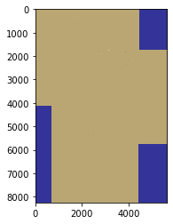
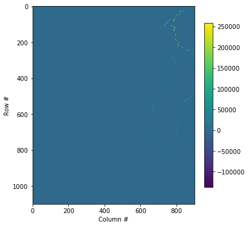

2.2. Alonso Gonzalez: Stream Network Abstraction
[ ]:
%%bash
cd /home/user/my_SE_data/exercise
[ ]:
grass78 -text grassdb/europe/PERMANENT/ <<EOF
g.extension extension=r.stream.basins
EOF
[ ]:
import geopandas as gpd
gdf = gpd.read_file('geodata/shp/tilesComp.shp')
print (gdf)
gdf.plot(edgecolor="purple", facecolor="None")
[6]:
%%bash
cd /home/user/my_SE_data/exercise
grass78 -f -text --tmp-location -c geodata/dem/SA_elevation_mn_GMTED2010_mn_msk.tif <<'EOF'
g.gisenv set="GRASS_VERBOSE=-1","DEBUG=0"
## import the layers
r.external input=geodata/dem/SA_elevation_mn_GMTED2010_mn_msk.tif output=elv --o --q # dem
r.external input=geodata/dem/SA_all_dep_1km.tif output=dep --o --q # depression
r.external input=geodata/dem/SA_are_1km_msk.tif output=are --o --q # area-pixel
r.external input=geodata/mask/msk_1km.tif output=msk --o --q # land-ocean mask
g.region -m
for tile in 1 2 3 ; do # loop for each tile
r.mask raster=msk --o --q # usefull to mask the flow accumulation
# extract tile extent from the tilesComp.shp
wL=$(ogrinfo -al -where " id = '$tile' " geodata/shp/tilesComp.shp | grep POLYGON | awk '{ gsub(/[(()),]/," ",$0 ); print $2 }')
nL=$(ogrinfo -al -where " id = '$tile' " geodata/shp/tilesComp.shp | grep POLYGON | awk '{ gsub(/[(()),]/," ",$0 ); print $3 }')
eL=$(ogrinfo -al -where " id = '$tile' " geodata/shp/tilesComp.shp | grep POLYGON | awk '{ gsub(/[(()),]/," ",$0 ); print $4 }')
sL=$(ogrinfo -al -where " id = '$tile' " geodata/shp/tilesComp.shp | grep POLYGON | awk '{ gsub(/[(()),]/," ",$0 ); print $7 }')
g.region w=$wL n=$nL s=$sL e=$eL res=0:00:30 --o
g.region -m
### maximum ram 66571M for 2^63 -1 (2 147 483 647 cell) / 1 000 000 * 31 M
#### -m Enable disk swap memory option: Operation is slow
#### -b Beautify flat areas
#### threshold=1 = ~1 km2 = 0.9 m2
echo "############# compute the flow accumulation using MFD for tile $tile ##############"
r.watershed -b elevation=elv depression=dep accumulation=flow drainage=dir_rw flow=are memory=2000 --o --q
echo "############# extract stream ##################"
r.stream.extract elevation=elv accumulation=flow depression=dep threshold=8 direction=dir_rs stream_raster=stream memory=2000 --o --q
done
EOF
projection=3
zone=0
n=14
s=-56
w=-83
e=-34
nsres=923.44150551
ewres=703.7149865
rows=8400
cols=5880
cells=49392000
projection=3
zone=0
n=-12
s=-56
w=-76.4
e=-43
nsres=924.52244935
ewres=710.89449752
rows=5280
cols=4008
cells=21162240
############# compute the flow accumulation using MFD for tile 1 ##############
############# extract stream ##################
projection=3
zone=0
n=1
s=-38
w=-73.9
e=-34.6
nsres=922.66504302
ewres=826.93226998
rows=4680
cols=4716
cells=22070880
############# compute the flow accumulation using MFD for tile 2 ##############
############# extract stream ##################
projection=3
zone=0
n=12.7
s=-24.5
w=-81.7
e=-41.7
nsres=921.8619211
ewres=872.86703289
rows=4464
cols=4800
cells=21427200
############# compute the flow accumulation using MFD for tile 3 ##############
############# extract stream ##################
Starting GRASS GIS...
Creating new GRASS GIS location <tmploc>...
Cleaning up temporary files...
__________ ___ __________ _______________
/ ____/ __ \/ | / ___/ ___/ / ____/ _/ ___/
/ / __/ /_/ / /| | \__ \\_ \ / / __ / / \__ \
/ /_/ / _, _/ ___ |___/ /__/ / / /_/ // / ___/ /
\____/_/ |_/_/ |_/____/____/ \____/___//____/
Welcome to GRASS GIS 7.8.5
GRASS GIS homepage: https://grass.osgeo.org
This version running through: Bash Shell (/bin/bash)
Help is available with the command: g.manual -i
See the licence terms with: g.version -c
See citation options with: g.version -x
Start the GUI with: g.gui wxpython
When ready to quit enter: exit
corrupted size vs. prev_size while consolidating
/bin/bash: line 5: 15762 Aborted (core dumped) r.external input=geodata/dem/SA_elevation_mn_GMTED2010_mn_msk.tif output=elv --o --q
/bin/bash: line 6: 15768 Segmentation fault (core dumped) r.external input=geodata/dem/SA_all_dep_1km.tif output=dep --o --q
double free or corruption (!prev)
/bin/bash: line 7: 15775 Aborted (core dumped) r.external input=geodata/dem/SA_are_1km_msk.tif output=are --o --q
free(): invalid pointer
/bin/bash: line 8: 15781 Aborted (core dumped) r.external input=geodata/mask/msk_1km.tif output=msk --o --q
free(): invalid pointer
WARNING: Subprocess failed with exit code 6
free(): invalid pointer
/bin/bash: line 12: 15841 Aborted (core dumped) r.stream.extract elevation=elv accumulation=flow depression=dep threshold=8 direction=dir_rs stream_raster=stream memory=2000 --o --q
WARNING: MASK already exists and will be overwritten
free(): invalid pointer
WARNING: Subprocess failed with exit code 6
free(): invalid pointer
/bin/bash: line 12: 16095 Aborted (core dumped) r.stream.extract elevation=elv accumulation=flow depression=dep threshold=8 direction=dir_rs stream_raster=stream memory=2000 --o --q
WARNING: MASK already exists and will be overwritten
free(): invalid pointer
WARNING: Subprocess failed with exit code 6
free(): invalid pointer
/bin/bash: line 12: 16272 Aborted (core dumped) r.stream.extract elevation=elv accumulation=flow depression=dep threshold=8 direction=dir_rs stream_raster=stream memory=2000 --o --q
WARNING: Failed to start shell '/bin/bash'
Cleaning up temporary files...
Done.
Goodbye from GRASS GIS
[2]:
import rasterio
from rasterio.merge import merge
from rasterio.plot import show
import glob
import os
[11]:
#Creates the route to grab documents
dirpath = r"/home/user/my_SE_data/exercise/geodata/dem/"
out_fp = r"/home/user/my_SE_data/exercise/geodata/dem/CurrentsLA.tif"
# Make a search criteria to select the DEM files
search_criteria = "flow_*.tif"
q = os.path.join(dirpath, search_criteria)
print(q)
#________________________________________________________________________________________#
#________________________________________________________________________________________#
#________________________________________________________________________________________#
#Creates an array of objects to merge
dem_fps = glob.glob(q)
dem_fps
#________________________________________________________________________________________#
#________________________________________________________________________________________#
#________________________________________________________________________________________#
#Create a list of files to append
src_files_to_mosaic = []
for fp in dem_fps:
src = rasterio.open(fp)
src_files_to_mosaic.append(src)
mosaic, out_trans = merge(src_files_to_mosaic)
show(mosaic, cmap='terrain')
out_meta = src.meta.copy()
out_meta.update({"driver": "GTiff",
"height": mosaic.shape[1],
"width": mosaic.shape[2],
"transform": out_trans,
"crs": "epsg:4326"
}
)
/home/user/my_SE_data/exercise/geodata/dem/flow_*.tif

[12]:
src_files_to_mosaic
[12]:
[<open DatasetReader name='/home/user/my_SE_data/exercise/geodata/dem/flow_1.tif' mode='r'>,
<open DatasetReader name='/home/user/my_SE_data/exercise/geodata/dem/flow_2.tif' mode='r'>,
<open DatasetReader name='/home/user/my_SE_data/exercise/geodata/dem/flow_3.tif' mode='r'>]
[13]:
with rasterio.open(out_fp, "w", **out_meta) as dest:
dest.write(mosaic)
[3]:
import rasterio
import rasterio.plot
import pyproj
import numpy as np
import matplotlib
import matplotlib.pyplot as plt
[32]:
window = rasterio.windows.Window(0, 200, 900, 1100)
with rasterio.open('/home/user/my_SE_data/exercise/geodata/dem/CurrentsLA.tif') as src:
subset = src.read(1, window=window)
plt.figure(figsize=(6,10))
plt.imshow(subset)
plt.colorbar(shrink=0.5)
#plt.title(f'Band 4 Subset\n{window}')
plt.xlabel('Column #')
plt.ylabel('Row #')
[32]:
Text(0, 0.5, 'Row #')

[ ]: